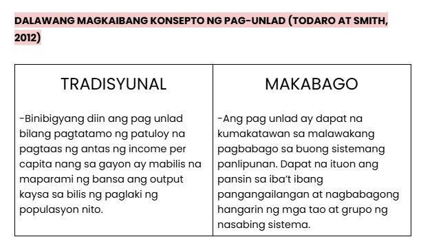
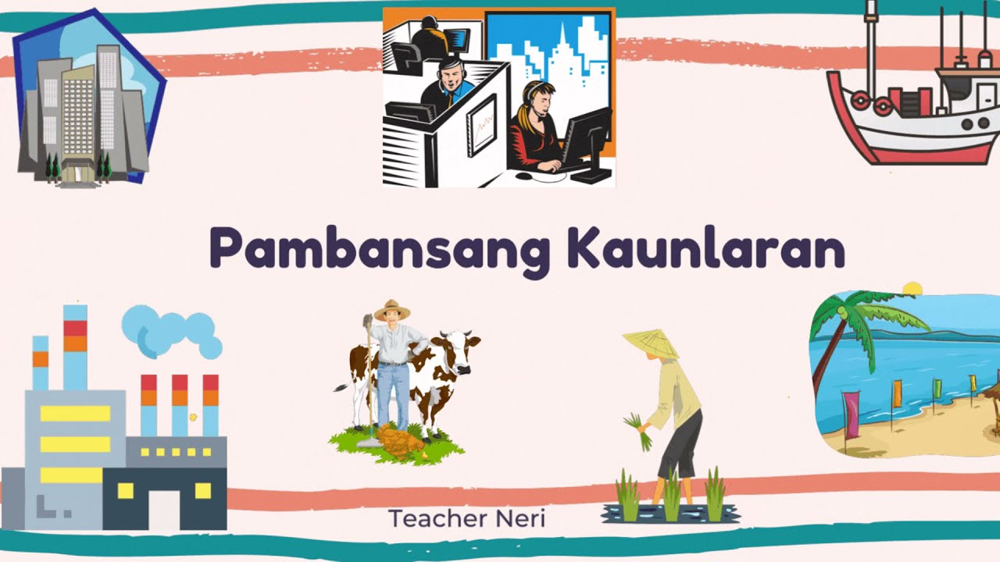

Lesson 1 - Pambansang Kaunlaran
- Yugto ng pamumuhay ng tao:
- 1.Pangangaso at pangingisda
- 2.Pagpapastol
- 3.Pagtatanim
- 4.Handicraft
- 5.Panahong Industriyal
- BANSANG PANGKAUNLARAN
- -Kailangan ng mahabang panahon
- -Estado ng bansa kung saan tinatamasa ng mga tao mula sa pinakamababang uri ng mamamayan ang nakakamanghang pagbabago sa ekonomiya at pamumuhay.
MGA KONSEPTO NG PAMBANSANG PANGKAUNLARAN
- Pagbabago
- -Paraan upang maging iba o naiiba.
- Pag-unlad (Positive change and development-nararamdaman)
- -Pagbabago mula sa mababa tungo sa mataas na antas ng pamumuhay.
- -Pag angat, pagsulong, o paglago ng pangkalahatang aspeto ng buhay. (Bon at Bon)
- -Isang progresibo at aktibong proseso at ang produkto nito ay ang pagsulong (Fajardo)
- -Ang kaunlaran ay matatamo lamang kung mapauunlad ang yaman ng buhay kaysa sa yaman ng ekonomiya. (Amartya Sen)
- Pagsulong (nakikita)
- -Pagusad tungo sa layunin.
- -Pagpapaunlad ng kakayahan, kaalaman, at abilidad upang makasabay sa agos ng buhay.
- -Sa pana-panahon, naiiba ang sitwasyon at kalagayan kaya naman ang pagsulong ay kailangan upang makasabay sa agos ng buhay.
- -Ayon sa United Nations Conference on Trade and Development (2012) ay mas malaki ang bilang ng dayuhang mamumuhunan sa papaunlad na bansa kaysa sa maunlad na bansa.
- Ebolusyon (Kailangan ng mahabang proseso)
- -Pagbabago sa mga katangian sa loob ng mahabang panahon
- -Anuman ang unang dumating ay mas mabuti sa sinundang panahon.

- SALIK SA PAGSULONG NG EKONOMIYA:
- 1.Likas na yaman
- 2.Yamang tao
- 3.Kapital
- 4.Teknolohiya at Inobasyon
- HDI (HUMAN DEVELOPMENT INDEX)
- -Pangkalahatang sukat ng kakayahan ng bansa na matugunan ang mahahalagang aspekto ng kaunlarang pantao: kalusugan, edukasyon, etc.
- MAHBUB UL HAQ (Father of HDI)
- -Akses sa edukasyon
- -Maayos na serbisyong pangkalusugan
- -Mas matatag na kabuhayan
- -Kawalan ng karahasan at krimen
- -Kasiya-siyang mga libangan
- -Kalayaang pampulitika at pangkultura
- -Pakikilahok sa mga gawaing panlipunan
- MGA PALATANDAAN NG PAG-UNLAD:
- -Makatwiran at dinamikong kaayusan ng panlipunan
- -Kasaganaan at kasarinlan
- -Kalayaan sa kahirapan, hanapbuhay para sa lahat, umaangat na istandard ng pamumuhay, at mainam na uri ng buhay para sa lahat
- -Sapat na mga lingkurang panlipunan
- -Katarungang panlipunan
MGA GAMPANIN NG MAMAMAYAN SA PAG UNLAD NG BANSA:
- 1.MAPANAGUTAN
- -Tamang pagbabayad ng buwis
- -Makialam
- 2.MAABILIDAD
- -Bumuo o sumali sa kooperatiba
- -Pagnenegosyo
- 3.MAALAM
- -Tamang pagboto
- -Pagpapatupad at pakikilahok sa mga proyektong pangkaunlaran sa komunidad
- 4.MAKABANSA
- -Pakikilahok sa pamamahala ng bansa (participative governance)
- -Pagtangkilik sa mga produktong Pilipino

- MGA TUNGKULIN SA PAG UNLAD NG BANSA:
- -Suportahan ang ating pamahalaan.
- -Sundin at igalang ang batas.
- -Alagaan ang ating kapaligiran.
- -Tumulong sa pagpuksa sa korapsyon at katiwalian sa pamahalaan.
- -Maging produktibo.
- -Tangkilikin ang mga produktong Pilipino.
- -Magtipid ng enerhiya.
- -Makilahok sa mga gawaing pansibiko.
< back to the AP home page